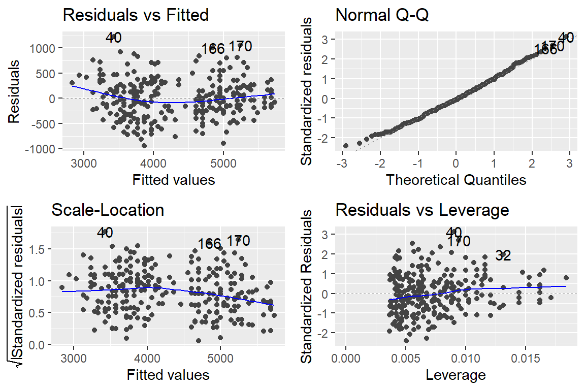

Introduction
This tutorial is based on information from R4all and Our Coding Club. Data, code, answers and an R Markdown Cheat Sheet is included in the github repository: https://github.com/susjoh/Intro_to_Stats_in_R.
This practical will explore how to write reports in R Markdown and how to conduct simple statistical tests. By the end, you should be able to:
- Write, embed and render code and results into an HTML document.
- Carry out basic statistics and visualisations, including:
- Chi-squared \(\chi^{2}\) test with
chisq.test() - 2-sample t-test with
t.test() - Linear regression with
lm()
- Chi-squared \(\chi^{2}\) test with
Click below to get started!
Writing reports with R Markdown.
R Markdown is a tool for writing reproducible reports in R. It uses the knitr library by Yihui Xie to produce documents with embedded code and figures in HTML, Word and PDF format. It can also be used to create webpages and presentations. Some great examples of what can be achieved are shown here.
Creating an R Markdown Document.
Open RStudio and create a new markdown document by going to File > New File > R Markdown.... In the window, name your document, select HTML and click OK. RStudio should automatically create a template as follows:
To “render” the document, click the button that says Knit (you may have to save it first). You will see that it produces a formatted HTML document with embedded figures based on the text and code within the Markdown file. Take some time to familiarise yourself with how the script matches to the output.
A convenient feature of R Markdown in RStudio is the Show document outline in the top right corner of the window pane. For very long scripts, adding #### or ---- to a comment line (#) will include the comment in the document outline. Try it out. It is possible to carry out basic formatting as well as adding headings, tables, lists and external figures. For the very basics of Markdown, go to Help > Markdown Quick Reference. You can also access very detailed cheatsheets through Help > Cheatsheets.
Exercise 1
Create a new R Markdown Script with the following header:
---
title: Introduction to Statistics in R
author: Your Name
date: 17 November 2020
output: html_document
---Add some text & familiarise yourself with basic formatting (e.g. *italic*, **bold**). Add headers for “Introduction”, “Chi-square test”, “Two-sample t-test” and “Linear regression”.
Click here for advanced exercises
- For this practical, create a slideshow instead of an HTML document.
Embedding code in R Markdown.
Code can be embedded into the document in two ways. First, as a “chunk”:
```{r}
head(cars) # this is a dataset included in base R
```Code chunks can be named, e.g. ```{r cars}
Second, as inline code:
which will print Two plus two equals 4..
As you have seen in the example, there can be several code chunks within a document. This is how it works:
- Running the .Rmd document opens a new R session.
- Each chunk is run sequentially and saved in the working environment. Therefore libraries and new objects created in a chunk are in the workspace for all subsequent chunks. Imagine a normal script, but split into smaller pieces.
- When clicking
Knit, RStudio assumes the directory containing the file is the working directory. - All chunks in the document must be able to run without any errors, or the document will not render.
Structuring an R Markdown document.
The first chunk in your Markdown document is a good place to load libraries and data. In this practical, we will use the libraries ggplot2 and dplyr. Put this chunk after the header of your document and click Knit:
```{r}
library(ggplot2)
library(dplyr)
```You may notice that this results in some unsightly code that is not relevant to the document. It is possible to control what is reported in the document using additional markers within the chunk description. For example, the following will allow the command to run invisibly:
```{r echo = FALSE, message = FALSE, warning = FALSE}
library(ggplot2)
library(dplyr)
```It can also control how results and figures are presented. Try knitting:
```{r}
data(cars)
str(cars)
ggplot(cars, aes(x = speed, y = dist)) + geom_point()
```and then replacing it with the following, and knitting again:
```{r echo = F, results = "hide", fig.width = 4, fig.height = 3}
data(cars)
str(cars)
ggplot(cars, aes(x = speed, y = dist)) + geom_point()
```The second option will hide the code (echo = F) and code output (results = "hide") but show the figure (dimensions specified with fig.width and fig.height). Some common options are given here:
eval = FALSEmeans that the code will not be run and no results generated. This is useful for displaying example code or for disabling a large block of code.include = FALSEruns the code but doesn’t show the code or results in the knitted document. Good for code you don’t want to clutter your report (e.g. loading libraries, data etc)echo = FALSEhides the code but shows the results.message = FALSEorwarning = FALSEhides messages or warnings that might appear in the finished file.results = 'hide'hides printed output;fig.show = 'hide'hides plots.error = TRUEcauses the render to continue even if code returns an error. NB. Use this with caution e.g. if you are trying to debug code or wish to show the error for some reason.
Other Points to Note:
Code in R Markdown chunks can be run in the console as in the previous practical. The default option is to show the code output inline in the document. Some people like this, others don’t (including me): to switch this function on and off, go to
Global options > R Markdown > Show output inline for all Markdown documentsand select your preferred setup.A reminder that R Markdown documents are inflexible to errors - the code must be error free, or it will not render (usine
error = TRUEwith caution).Want to learn more? More detailed information on this can be found at the Coding Club tutorial and the online R for Data Science book.
Basic statistics.
For the rest of the practical, it is expected that you create an R Markdown document that contains text, code, graphs and inline reporting of results. We will approach this by examining the data through visualisation, form our hypothesis, carry out the statistical test and then Knit this information into a document.
In the interests of time, this practical will focus on the how rather than why we will do these tests. We highly recommend doing further reading in your own time, such as “Getting Started with R” (2nd Edition, 2017) by Beckerman, Childs and Petchey (link), which is available on PDF through the Edinburgh University Library service.
Chi-squared (\(\chi^{2}\)) contingency table
A \(\chi ^{2}\) contingency table analyses count data, and looks at the association between two or more categorical variables. In this example, we will examine the differences in the frequency of red and black ladybirds (Adalia bipunctata) in rural and industrial habitats.
Our question is: are dark morphs more likely to reside in dark (industrial) backgrounds? The null hypothesis is that there is no association between ladybird colour morph and habitat type .
Load the data file ladybirds.csv into R using read.csv() and examine it using glimpse() from the dplyr package, or head() as before.
library(dplyr)
ladybirds <- read.csv("data/ladybirds.csv", header = T)
glimpse(ladybirds)There are multiple lines for each category, with the column number giving the count details. We ultimately want four numbers, corresponding to the 2 \(\times\) 2 categories: red industrial, black industrial, red rural and black rural.
This can be done using the dplyr functions group_by() and summarise().
totals <- group_by(ladybirds, Habitat, morph_colour)
totals <- summarise(totals, total.number = sum(number))
totals
# You can also use the pipe %>% to make this function a little smoother:
totals <- group_by(ladybirds, Habitat, morph_colour) %>%
summarise(total.number = sum(number))
totalsPlot the data
One visualisation for this type of data is a bar chart using geom_col() in ggplot2.
library(ggplot2)
ggplot(totals, aes(x = Habitat, y = total.number, fill = morph_colour)) +
geom_col() There are two edits we can make to this to improve the visualisation: to add geom_col(position = "dodge") to place bars side by side, and to use scale_fill_manual() to change the colours of the bars to black and red to match the colour of the morphs in real life:
ggplot(totals, aes(x = Habitat, y = total.number, fill = morph_colour)) +
geom_col(position = "dodge") +
scale_fill_manual(values = c(black = "black", red = "red"))Does it look like there is a trend here? What would your prediction be based on the figure?
Test the hypothesis with chisq.test().
The \(\chi^{2}\) is run using the function chisq.test(). As this is a 2 \(\times\) 2 contingency test, we must convert the data into a table or matrix. Looking at the data ladybirds, a matrix can be made using the function xtabs(), which is similar to creating pivot table cross-tabulation in Excel:
lady.mat <- xtabs(number ~ Habitat + morph_colour, data = ladybirds)Now run the test:
chisq.test(lady.mat)This provides a statistic and p-value indicating that there is a very small probability that the observed pattern arose by chance. Therefore, we can reject the null hypothesis. We can extract more information from the statistic if we save the chisq.test(ladymat) as an object:
lady.chisq <- chisq.test(lady.mat)Running lady.chisq gives the same output as before, but we can explore the object in detail using the $ notation:
names(lady.chisq)
str(lady.chisq) # not run here to save space - please run it!
lady.chisq$statistic
lady.chisq$p.valueIn the R Markdown document, it is possible to quote statistics inline using the `r ` notation e.g. `r lady.chisq$statistic` and `r lady.chisq$p.value` will print the \(\chi^{2}\) statistic and P value inline, respectively.
Exercise 2.
Create a short report in the R Markdown document with an inline report of the test statistics and P-value. This can be done as follows:
Add a code chunk for loading and manipulating the data above, and running the \(\chi^{2}\) test.
Edit the previous chunk options so that it does not print the code or results to the compiled document.
Hint:
Defineechoandresultsin the chunk options.Write a few lines of text stating the hypothesis, the test statistic and interpretation, e.g.: > The null hypothesis is… Ladybird morphs are not equally distributed in the two habitats (Chi squared = …, df = …, P = …), with black morphs being more frequent in the … habitat.
Add a code chunk to output the figure that illustrates the results of the \(\chi^{2}\) test.
Click here for advanced exercises
- Reduce the number of significant figures in the inline results.
- Fix the scientific notation in inline results.
Two-sample t-test.
A two-sample t-test is one of the most conceptually simple and commonly used hypothesis tests. It determines whether the mean of two groups of numeric values are significantly different from each other, or are due to random chance. Here, we will use data from two species of penguins, Adelie and Gentoo, to determine if their body mass is significantly different.
This data is from the palmerpenguins package on CRAN. You can prepare the data for the rest of this practical as follows:
# Run this once in your console.
install.packages("palmerpenguins") library(palmerpenguins)
subpenguin <- filter(penguins, species %in% c("Adelie", "Gentoo"))
head(subpenguin)And here are the penguins <3

The t-test makes two assumptions about the data - that both groups are normally distributed and that the variances are equal in each category. For the interests of time, we will assume that both of these assumptions are met. (NB. These assumptions can be tested using shapiro.test() and var.test() on specific value vectors. If you would like to try this and need help, use the ? command or ask the demonstrators).
The first step is to visualise the data. One approach is to use a boxplot, which is more visually appealing (but based on the median rather than the mean) - another is to use histograms. These can help us to assess if the means seem different between the two categories, and if the data is normally distributed with a similar variance. It can also provide an indication of whether the null hypothesis can be accepted or rejected.
ggplot(subpenguin, aes(species, body_mass_g)) + geom_boxplot()## Warning: Removed 2 rows containing non-finite values (stat_boxplot).# histogram with facet_wrap
ggplot(subpenguin, aes(body_mass_g)) +
geom_histogram() +
facet_wrap(~species, ncol = 1)## Warning: Removed 2 rows containing non-finite values (stat_bin).To carry out the t-test, we will use the t.test() function. We can find out the details of the test using ?t.test. The syntax requires a formula body_mass_g ~ species and the data frame (data = subpenguin). This should reflect the hypothesis - how does sepal length vary as a function of species?
bm_test <- t.test(body_mass_g ~ species, data = subpenguin)
bm_test##
## Welch Two Sample t-test
##
## data: body_mass_g by species
## t = -23.386, df = 249.64, p-value < 2.2e-16
## alternative hypothesis: true difference in means is not equal to 0
## 95 percent confidence interval:
## -1491.183 -1259.525
## sample estimates:
## mean in group Adelie mean in group Gentoo
## 3700.662 5076.016The function has automatically used the Welch version of the t-test, which relaxes the assumption of equal variances - this is fine for the purposes of this practical (see Beckerman et al. for a discussion of this in more detail). The output provides the t, df and p-value for the test, as well as the mean value in each of the two groups. The 95% confidence interval shows the interval between the difference between the two means - if this overlapped 0, then we would retain the null hypothesis.
Therefore, given the output, we can reject the null hypothesis, and can conclude that Gentoo penguins are heavier than Adelie penguins.
Exercise 3.
- Create a short report in the R Markdown document with an inline report as for Exercise
- Use the Markdown Quick Reference in RStudio to add the image of the penguins to the Markdown document (the path is
"images/Penguins.png")
Click here for advanced exercises
- Format the plot area to get rid of the default grey background.
- Add figure captions (see RStudio CheatSheet) and find a solution to refer to a Figure within the text. For example: “There was no difference between variables A and B (Figure X)”, where X will refer to the correct figure number in the text.
Simple Linear regression.
The last model we will tackle is a linear regression. This is the most basic of a class of models called “general linear models” which also includes multiple regression and ANOVA.
For this, we will contiue to work on the penguin dataset, examining the correlation between body mass and flipper length.
head(subpenguin)Our question is whether flipper length varies relative to penguin body mass. Here, we will put body mass as the response (dependent) variable, whereas flipper length is the explanatory (independent) variable. Both are continuous, numeric variables.
Plot the data:
ggplot(subpenguin, aes(x = flipper_length_mm, y = body_mass_g)) +
geom_point() +
labs(x = "Flipper Length (mm)", y = "Body Mass (g)")## Warning: Removed 2 rows containing missing values (geom_point).Visually, it looks like there is a positive relationship between the two measures. We can test this using the function lm() to fit the model. The syntax is similar to that of the t-test above:
lm_test <- lm(body_mass_g ~ flipper_length_mm, data = subpenguin)Before examining the output, it is important to check the assumptions of the linear model. This can be done using the autoplot() function in library(ggfortify) to examine the model residuals (You may need to install this package using install.packages("ggfortify"))
library(ggfortify)
autoplot(lm_test)## Warning: `arrange_()` is deprecated as of dplyr 0.7.0.
## Please use `arrange()` instead.
## See vignette('programming') for more help
## This warning is displayed once every 8 hours.
## Call `lifecycle::last_warnings()` to see where this warning was generated.
Generally these plots look good - although we have limited time to understand them in detail, we can quickly interpret them as follows:
- The top left plot determines if the line is an appropriate fit to the data. A relatively straight line is good - something humped would indicate that a non-linear relationship.
- The top right plot shows if the residuals are normally distributed - they should line up on the straight dashed line.
- The bottom left plot is a check of equal variances; again, a lack of pattern (i.e. a horizontal line) shows the model is an appropriate fit.
- Finally, the bottom right panel shows the residuals vs. leverage, to determine some of the data points have a particularly strong influence on the regression line. A straight line and all data within the Cook’s distance lines (these do not appear in this plot) indicate that this is not an issue in the data.
Given that the data looks good, let’s examine the output form the statistical model:
lm_test##
## Call:
## lm(formula = body_mass_g ~ flipper_length_mm, data = subpenguin)
##
## Coefficients:
## (Intercept) flipper_length_mm
## -5590.89 49.01As you can see, calling the statistical model alone only provides us with two values - the model intercept and the slope. The slope is positive, and suggests that for for each unit increase in flipper length, there is an increase in body mass by ~49 grammes.
However, calling this alone does not provide information on whether we can reject the null hypothesis. For this, we use the summary() function:
summary(lm_test)##
## Call:
## lm(formula = body_mass_g ~ flipper_length_mm, data = subpenguin)
##
## Residuals:
## Min 1Q Median 3Q Max
## -943.20 -267.91 -26.75 261.97 1222.89
##
## Coefficients:
## Estimate Std. Error t value Pr(>|t|)
## (Intercept) -5590.892 321.469 -17.39 <2e-16 ***
## flipper_length_mm 49.011 1.586 30.91 <2e-16 ***
## ---
## Signif. codes: 0 '***' 0.001 '**' 0.01 '*' 0.05 '.' 0.1 ' ' 1
##
## Residual standard error: 394.2 on 272 degrees of freedom
## (2 observations deleted due to missingness)
## Multiple R-squared: 0.7784, Adjusted R-squared: 0.7776
## F-statistic: 955.4 on 1 and 272 DF, p-value: < 2.2e-16We can see here that the observed positive slope is highly significant (P <2e-16).
Finally, we can add the slope to the plot using `stat_smooth(method = “lm”):
ggplot(subpenguin, aes(x = flipper_length_mm, y = body_mass_g)) +
geom_point() +
stat_smooth(method = "lm") +
labs(x = "Flipper Length (mm)", y = "Body Mass (g)")## Warning: Removed 2 rows containing non-finite values (stat_smooth).## Warning: Removed 2 rows containing missing values (geom_point).Exercise 4.
- Create a short report in the R Markdown document with an inline report as for Exercises 2 and 3. Remember to report the slope, t-statistic, degrees of freedom and P-value.
Hint:
Extracting values from the model can use indexing as visited in the preparation tutorial for the previous session. The best approach is to create an object for the summary of lm_test e.g. summary.lm_test <- summary(lm_test)$coefficients and calling values based on the indices (e.g. the t-value will be summary.lm_test[2,3].
Concluding Remarks
The linear model will be central to your PhD, so of course this can be extended to a general linear model within lm() as so:
lm_test2 <- lm(body_mass_g ~ flipper_length_mm + species, data = subpenguin)
summary(lm_test2)##
## Call:
## lm(formula = body_mass_g ~ flipper_length_mm + species, data = subpenguin)
##
## Residuals:
## Min 1Q Median 3Q Max
## -925.55 -290.52 -25.32 266.16 1202.46
##
## Coefficients:
## Estimate Std. Error t value Pr(>|t|)
## (Intercept) -4375.29 694.02 -6.304 1.17e-09 ***
## flipper_length_mm 42.52 3.65 11.649 < 2e-16 ***
## speciesGentoo 217.52 110.22 1.974 0.0495 *
## ---
## Signif. codes: 0 '***' 0.001 '**' 0.01 '*' 0.05 '.' 0.1 ' ' 1
##
## Residual standard error: 392.2 on 271 degrees of freedom
## (2 observations deleted due to missingness)
## Multiple R-squared: 0.7815, Adjusted R-squared: 0.7799
## F-statistic: 484.7 on 2 and 271 DF, p-value: < 2.2e-16ggplot(subpenguin, aes(x = flipper_length_mm, y = body_mass_g, col = species)) +
geom_point() +
stat_smooth(method = "lm") +
labs(x = "Flipper Length (mm)", y = "Body Mass (g)")## Warning: Removed 2 rows containing non-finite values (stat_smooth).## Warning: Removed 2 rows containing missing values (geom_point).